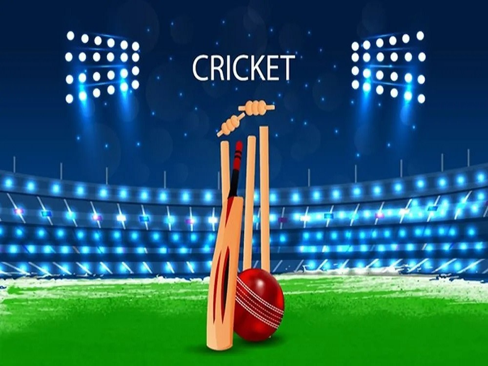

Learn Cricket Today and Be Champions Tomorrow

Sachin Ramesh Tendulkar is an Indian former international cricketer who captained the Indian national team. He is widely regarded as one of the greatest batsmen in the history of cricket
Virat Kohli is an Indian international cricketer and the former captain of the Indian national cricket team. He is a right-handed batsman and an occasional medium-fast bowler
Mahendra Singh Dhoni is an Indian professional cricketer who plays as a right handed batter and a wicket-keeper.
Rohit Gurunath Sharma is an Indian international cricketer who currently captains the India national cricket team across all formats. He is a right-handed batsman.
Gautam Gambhir is an Indian former international cricketer, former politician and philanthropist. He played for India in all formats of the game between 2003 and 2016.
Yuvraj Singh is a former Indian international cricketer who played in all formats of the game. He is an all-rounder who batted left-handed in the middle order and bowled slow left-arm orthodox.
Zaheer Khan is an Indian former professional cricketer who played all forms of the game for the Indian national team from 2000 till 2014. He is a fast-medium left-arm bowler.
Virender Sehwag is a former Indian cricketer who represented India from 1999 to 2013. Widely regarded as one of the most destructive openers and one of the greatest batsman of his era,